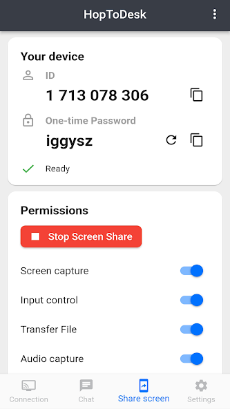
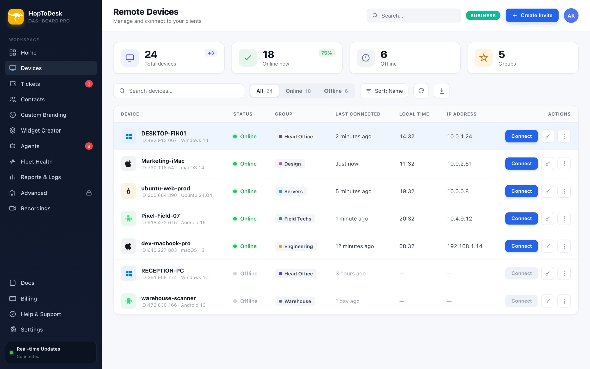

HopToDesk 装了大半年，那些当初没在意的细节才是长期用下来的关键
从一开始只拿它手机控电脑的临时工具，到现在日常团队远程支持的主力，这大半年里对 HopToDesk 的判断翻了不止一次。
开头：当初为什么装
说起来是去年年底的事。那段时间家里台式机出了点小毛病，人在公司没法回去重启，朋友给推了 HopToDesk——当时对比了几个远程控制工具，RustDesk、ToDesk、向日葵都装过试了一遍，最后选它纯粹是因为 Android 客户端界面干净，没广告，而且开源。当时从官网直接下的安装包，没用第三方渠道。那时候根本想不到它能撑这么久，更想不到后面会用到团队管理那一大套。

变化三连
哪点越用越顺手
面板的录像库是后来才发现的好东西。一开始以为录像就是个可选的附属功能，帮团队做远程支持时才发现——每次会话录完，面板自动按设备、技术员、时长分类，下次再找某次会话的录像，直接搜设备名就能定位。而且文件不上传服务器，全在录制方本机存，WebM 格式也不占太多空间。客户端设置里可以一键打开录像文件夹，自动清理 N 天前旧录像的开关也开了之后，根本不用操心磁盘堆积。
跨平台的一致性也比预想中好。Mac 上 Intel 和 Apple Silicon 两个安装包在下载页都有，直接选对应机型拖进应用程序文件夹就行；Linux 那边各发行版的包格式全有，Debian/Ubuntu 是 deb，Fedora/openSUSE 是 rpm，Arch 系是 zst，甚至 FreeBSD 都有 amd64 和 aarch64 包——安装后注册 systemd 服务，后台常驻的方式跟其他平台一致。最惊喜的是 Wayland 下的无人值守设置，虽然首次连接会弹系统级安全询问，但勾上「记住此选择」之后就没再烦过。这个设置在HopToDesk文档里写得挺清楚，不过当时找了好一会儿才定位到。
哪点越用越烦
便携模式的限制是慢慢暴露的。当初图省事用便携版，双击 exe 就跑，什么都不写进系统，觉得这才叫轻量便携。结果有次家里电脑重启了，人在外面想用手机连回去——窗口没开，连不上。那是第一次意识到：便携模式窗口一关就断，重启后必须有人打开程序才能被连上。后来乖乖点了 Install 装成后台服务，才算解决。安装模式的服务随系统自启，开机到登录界面之前就能被连接上，设备 ID 重装前后也保持不变。
还有 macOS 的权限流程。首次启动自动弹出权限引导页，列出屏幕录制、辅助功能这两项必给的权限，不给就既抓不了屏也控不了键鼠。按引导去系统设置 → 隐私与安全性里开开关，完了还得重启一次应用才能生效。这套流程说起来简单，但第一次走的时候绕了好几遍，总觉得开完权限没生效，重启了两三次才确认没问题。
哪个功能成了每天离不开的
团队安全那套。2FA 两步验证、通行密钥、SSO 单点登录——当初觉得这些都是大企业才用得上的东西，自己几个人的小团队没必要搞这么严。后来有次账号差点被撞库，赶紧开了强制全员 2FA，通行密钥也配上了。现在每天登录面板用指纹就行，连密码都不用记，反而比单纯密码登录方便。所有者还能强制全员开 2FA，新成员进来没设置的话登录后先补齐，这套流程现在已经是团队的默认动作了。
通行密钥这块尤其值得说——一台电脑一个通行密钥，可注册多个、随时增删，指纹面容都能当凭证，无密码可被钓鱼。本身就是多因素认证，开了之后反而不用再强制动态码。单点登录支持 OIDC 和 SAML 2.0 两种协议，如果以后接公司的微软 Entra 或 Okta，员工用企业凭据登录就行，不用另记一套账号。

观感修正
说个反直觉的：当初选它是冲着「手机端远程控制」的定位来的，以为这是它的核心卖点。结果大半年下来，手机端反而用得越来越少——现在主要场景是团队的跨平台远程支持，面板的设备管理、录像库、SSO 这些当初完全没在意的功能，才是现在离不开的。当初下载时注意到它的目录也归在「手机版」分类下，但实际上桌面端的团队协作能力反而成了主力场景。
当初还高估了便携模式。觉得免安装、用完即删是最大的优势，实际上真正常用的场景反而需要安装模式的后台服务——重启后能连、开机前能连、隐私模式的驱动级黑屏也依赖安装模式。便携模式也就偶尔帮朋友远程排个障，从 U 盘里救急的时候用一下，大部分时候还是规规矩矩装成服务。
另外当初以为它的安全功能是锦上添花，现在发现是底线功能。强制 2FA、通行密钥、设备标签限定成员可见范围，这些不是「企业级才需要」，几个人的小团队一样要管。外包技术员只看到分配给他的客户设备，内部设备不对外暴露，这套权限粒度用起来很踏实。
去留结论
暂时不会卸载。HopToDesk 现在已经是团队远程支持的主力工具，换掉它的迁移成本比留着它高。
但也有个保留信号：如果后面要做大规模的批量部署——比如给几十上百台客户机统一装远程工具——可能得再评估一下。虽然它有命令行静默安装的方式，hoptodesk --silent-install 一条命令就能批量推，定制安装包也能把自动录制等设置锁定，终端用户无法关闭，但跟专门做 MDM 的工具比还是轻了点。不过现阶段几个人的团队、几十台设备的规模，完全够用。
顺手补一句
如果你也在纠结远程控制工具选哪个，我的经验是：别光看第一次使用的体验，先装上用三个月。很多当初觉得无关紧要的细节——安装模式 vs 便携模式的区别、权限配置的完整流程、录像文件到底存哪、团队安全到底有哪些选项——只有真到用的时候才知道重不重要。HopToDesk 在这些细节上没让我踩过太大的坑，大半年下来还算顺手。
如果你想系统了解它的全部功能和配置细节，HopToDesk 的官方文档写得挺全的，从各平台安装到团队部署都覆盖到了。远程控制工具这东西，真不是「哪个功能多就选哪个」，而是「哪个在你真用到的时候不添堵」就选哪个。HopToDesk 本身是开源项目，相关源码和文档资料在GitHub、Gitee、GitCode都有同步维护，国内访问后两者会更顺畅。